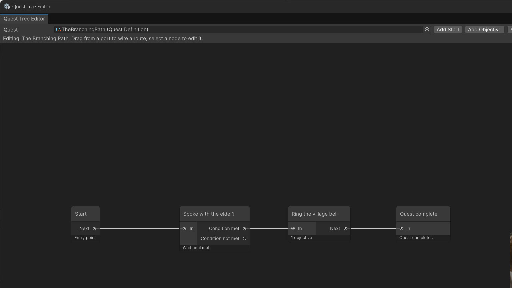

Branching
A Branch node carries a list of conditions (all must pass) and one of two branch modes. The two modes are different tools; each quest gate uses exactly one, and they are never mixed on the same node.

Wait until met (the gate)
The route holds at the branch node while its conditions are false. Nothing downstream activates. The moment a later report makes the conditions pass, the met route activates.
Use it for gates: speak to the gatekeeper before the lever works, hold a key item before the door objective opens.
In the demo: The Gatekeeper's Price waits on the
spoke_to_gatekeeper flag. Pulling the lever early
does nothing; the objective is not active yet.
Route immediately (the fork)
The branch evaluates once, the moment it activates, and takes a side: the met route if the conditions pass, the not-met target if they do not. It never re-evaluates — the road is chosen.
Use it for forks: the warden's road for a known name, the toll road for everyone else.
In the demo: Two Roads checks reputation ≥ 5 at the branch. Below 5, the toll road activates (gather 4 toll coins). Both roads rejoin at a shared Reward node.
Conditions
Condition kinds include flag set, stat at least, quest completed, and custom keys your game evaluates. Unlock conditions on a quest definition use the same condition data — a quest can stay Locked until another quest completes, a flag is set, or a stat reaches a value.